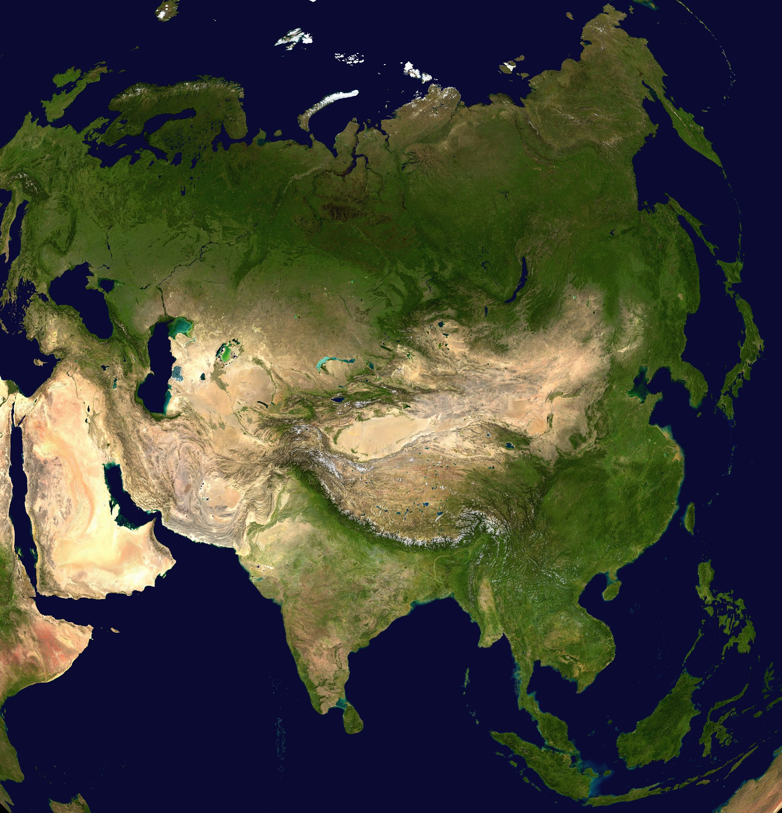

|  | Asia es uno de los seis continentes de la Tierra y el de mayor tamaño. Tiene una extensión total de 44,5 millones de kilómetros cuadrados, lo que representa el 30% del total de la superficie terrestre del planeta. Asia es también el continente de mayor población, con una cantidad aproximada de 4500 millones de habitantes, lo que representa más de la mitad de la población mundial. En Asia se encuentran los dos países más poblados del mundo: India y China. El 14 de abril de 2023 India superó a China en cantidad de población y se convirtió en el más poblado del planeta. Actualmente tiene 1428 millones de habitantes, lo que representa más del doble de la población de Europa y más población que la de todos los países africanos juntos. |
| Características de Asia Es el continente más grande del planeta y forma parte de la masa continental denominada Eurasia, que comparte junto con el continente europeo. Se une con el continente africano a través del canal de Suez. Tiene la mayor diversidad de etnias y culturas. Presenta climas muy variados, debido a su vasta extensión. Los idiomas más hablados son, en primer lugar, el chino mandarín y, en segundo lugar, el hindi o indostaní, el idioma oficial de la India. | |